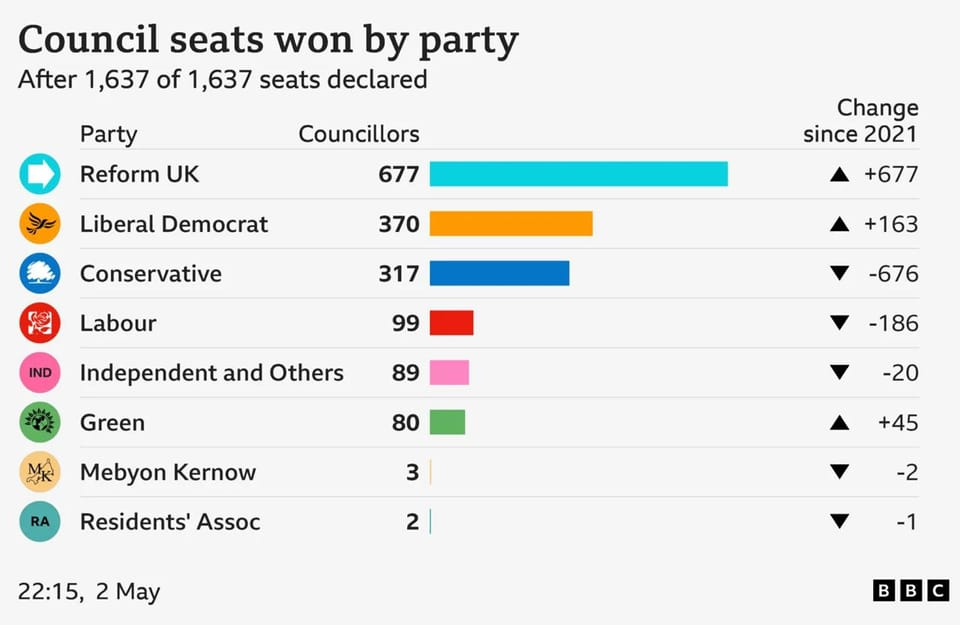

世界苦茶05月04日新闻 | 38条 | 英国极右翼改革党在地方选举大胜

英国极右翼改革党在地方选举大胜 | 澳大利亚右翼政党在选举中落败 | 以色列将大幅度扩大加沙行动 | 乌克兰拒绝在俄罗斯战争胜利日停火 | 美国对日本汽车零部件加收25%关税
苦茶数据
美元兑人民币：7.22（昨日7.21，前日7.25）
美元兑日元：143.97（昨日145.25，前日144.09）
上证指数：休市（昨日3279，前日3283）
标普500指数：休市（昨日5686，前日5604）
比特币：95967（昨日96449，前日97172）
布伦特原油：61.29（昨日62.51，前日61.09）
中国新闻
• 美国中情局5月1日发布两段中文视频，招募中国官员向美国泄密： 两段视频分别描述了担心自己命运、无法保护家人的高层官员和努力工作但为人作嫁的基层官员 最终联系中情局的场景，并在简介中附上了中情局的联系方式。中情局相信视频可突破“中国防火墙”接触到目标受众。中国驻美使馆未回应置评请求。
• 福州撞人车祸致2死 ：中国福建省省会福州市五一假期期间发生汽车撞人事件，多人受伤，两人死亡。警方通报称肇事原因是操作不当，肇事司机已被控制。多名网民星期五晚在社交平台发帖称，福州市鼓楼区一路段发生一起车祸，有汽车、电动车被撞。据快科技消息，网民晒图显示，车祸现场非常惨烈，其中一辆出租车直接被撞到报废。
• 铁路五一发送创新高 ：今年五一假期首日，中国铁路发送旅客逾2300万人次，同比增长11.7%，写下历史新高。中国国家铁路集团在官方微信公众号上公布，全国铁路星期四发送旅客2311.9万人次，其中动车组列车发送旅客1567.1万人次，同比分别增长11.7%、16.1%，均创历史新高。集团介绍，铁路部门精心组织五一假期运输，在星期三前集中投用19组新造时速350公里复兴号动车组，星期四开行旅客列车1.38万列，其中加开旅客列车超2000列，最大限度满足铁路旅客出行需求。
• 中吉乌铁路进入施工阶段 ：中吉乌铁路项目落地接近一年后，铁路主干道进入施工阶段。据新华社报道，中吉乌铁路吉尔吉斯斯坦境内段重点控制性工程费尔干纳山、纳伦1号、科什特伯三座隧道星期二开工建设，标志着中吉乌铁路项目正线工程进入实质性施工阶段。这三座隧道均为单洞单线隧道、长度超过10公里，是中吉乌铁路项目的重点控制性工程，具有高原、高寒、高地震烈度、高地应力的“四高”特点，地质环境复杂，交通条件不便，施工难度较大。
• 中日互指侵犯钓鱼岛领空 ：日本和中国相互指责对方进入钓鱼岛，日本称尖阁诸岛领海领空。日本第11管区海上保安总部称，中国4艘海警舰艇5月3日中午相继驶入钓鱼岛周边领海，随后其中一艘船上的一架直升机起飞并进入领空，飞行约15分钟后飞出领空。中国海警局称，中国海警舰艇在钓鱼岛海域巡航时发现一架日本民用飞机非法进入钓鱼岛领空。中国海警对其采取必要管控措施并起飞舰载直升机警告驱离。
亚太印太新闻
• 巴代表吁通过对话降紧张 ：巴基斯坦常驻联合国代表艾哈迈德表示，南亚地区局势升级对任何国家都不利，并呼吁通过对话和外交手段防止局势失控。新华社报道，艾哈迈德星期五在纽约联合国总部举行的记者会上说，巴基斯坦不寻求局势升级，巴政治领导层和各级官员已明确表达了这一立场。巴方已向联合国秘书长、联大主席和安理会等通报了最新事态发展，并向其他国际伙伴表明立场和关切。艾哈迈德说，巴基斯坦不寻求局势升级，但也做好充分准备以捍卫主权和领土完整。巴基斯坦希望与包括印度在内的所有邻国建立睦邻友好、和平与合作关系，主张建立基于相互尊重、主权平等、和平共处以及和平解决所有未决争端的关系。
• 赖清德盼美台共研军备 ：台湾总统赖清德与美国智库访团会面时说，未来台湾将持续向美国购买有助台海和平稳定的国防装备，并期望双方的安全合作，能从“军售”迈向“共同研发、共同制造”的伙伴关系。根据台湾总统府新闻稿，赖清德星期五接见美国智库“大西洋理事会”共和党策士团时说，台湾身处第一岛链关键位置，面对来自中国大陆的军事威胁及灰色地带侵扰，将持续展现坚定的自我防卫决心。他说，台湾正加速推动整体防卫能力，将优先编列特别预算，让国防预算由目前占GDP约2.5%提升至3%以上，凸显台湾政府守护区域和平稳定的决心。
• 朝中社批美挑衅核战争 ：朝中社星期六刊发军事评论员文章说，美国在朝鲜半岛地区的攻击性增兵活动，将进一步增加其本土安全不确定性。文章指出，美国近日在阿拉斯加州格里利堡军事基地进行的模拟拦截敌国洲际弹道导弹训练，打着“本土防卫”的招牌，本质上是把同朝鲜的核战争当做既成事实的攻击性军事行动。文章说，如果美国不寻求同朝鲜发生核战争，朝鲜战略核武力对准美国本土的事情就不会发生，更不必议论所谓“拦截”。
• 韩国保守党推金文洙参选 ：韩国执政的保守派国民力量党星期六推选前劳动部长金文洙代表该党角逐6月3日的总统大选。韩国前总统尹锡悦因企图实施戒严失败而遭罢免，促使韩国必须提早举行总统选举。金文洙在党内决选中，以56.53%的得票率当选总统候选人。他将面对在野的共同民主党候选人李在明的挑战。李在明目前在民调中以二位数的巨大差距，领先所有宣布参选的保守派候选人。
• 韩国大选选情陷剧烈震荡 ：韩国总统大选将于6月3日举行，距离投票日仅剩一个月之际，原本趋于成形的选战格局因司法裁决、权力交接与高层人事剧变而被彻底“重置”，政坛陷入全面动荡。最大在野党共同民主党候选人李在明因涉嫌违反《公职选举法》而面临的司法风险不断加剧。韩国最高法院星期四驳回他的上诉，并以“有罪为宗旨”发回首尔高等法院重审，李在明可能失去参选资格。首尔高院确定将于5月15日举行首次公审，那时正值大选冲刺期，引发政界与舆论强烈震动。针对最高法院1日的裁决，民主党谴责为“司法政变”、“干预大选”，并重新推动对副总理兼企划财政部长崔相穆的弹劾案。该案原于3月提出，指控崔涉嫌“内乱共犯”，此前被搁置。为避开弹劾程序生效的限制，崔相穆于1日晚主动请辞，弹劾案因此被终止。
• 人民行动党赢新加坡大选 ：人民行动党预计将赢得新加坡大选，获得超过70个议席。抽样计票结果显示，人民行动党在各集选区较上次大选支持率有所提升。在丹戎巴葛集选区和荷兰-武吉知马集选区，人民行动党的得票率预计将达到80%以上。在由资政李显龙领衔的宏茂桥集选区，人民行动党预计将获得79%的选票，高于2020年大选时的71.91%。在由总理黄循财领导的马西岭-油池集选区，人民行动党预计将获得74%的选票，较上届大选的63.18%有所上升。工人党赢下阿裕尼和盛港集选区共9个议席。
• 孟加拉数以千计伊斯兰人士抗议拟议中的女性权利改革： 孟加拉国首都达卡周六有数千名伊斯兰组织“伊斯兰守护者联盟”的支持者集会，抗议旨在保障女性平等权利包括财产权的改革草案。该组织领袖表示，拟议的法律改革与伊斯兰教法沙里亚相冲突。超过两万人聚集在达卡大学附近，部分示威者高举写有“拒绝西方针对我们女性的法律，奋起吧孟加拉”的横幅和标语牌。组织方威胁称，若政府不满足其要求，将于5月23日在全国范围内举行更多集会。领袖马穆努尔·霍克要求解散负责改革的临时政府委员会，并惩处其成员，指责他们“将宗教继承法标为男女不平等的根源”，伤害了“本国大多数民众的情感”。
科技新闻
• 英国拟吸引国际科研人才 ：据英国《金融时报》报道，在美国总统特朗普攻击美国学术自由之际，英国将宣布一项旨在吸引国际研究人才的计划。《金融时报》星期六的报道引述未具名知情人士的话称，英国政府将提供约5000万英镑资金，用于支持研究资助和搬迁。报道称，这项计划可能在未来几天宣布。报道引述知情人士称，英国首相斯塔默领导的工党政府拟通过此举来吸引国际人才，而这个尝试始于特朗普今年1月重新入主白宫之前，而且将对来自任何国家的科学家都保持开放。
• 美削预算终止登月项目 ：美国政府周五发布2026年预算提案，将削减1630亿美元的联邦支出。白宫提议2026财年预算为1.7万亿美元，较上一年度下降7.6%。据悉该提案将取消57亿美元电动汽车充电桩拨款项目，并取消能源部超过 150亿美元的基础设施投资和就业法案资金。该提案将为NASA拨款超过 70亿美元用于月球探索，拨款10亿美元用于火星探测项目投资。该提案还将扩大美国国际开发金融公司 包括新增30亿美元的循环基金。提案将使美国宇航局整体资金削减24%，将在第三次阿尔忒弥斯登月任务后逐步淘汰美国宇航局的太空发射系统火箭和猎户座载人飞船，并将取消“月球门户”项目。
财经新闻
• 特朗普4月份的关税收入超174亿美元 超越其第一任期内的任何收入： 上个月，特朗普总统的关税对进口商来说变得无法忽视，因为美国政府在4月份征收了超过174亿美元的“关税和某些消费税”。这几乎是3月份96亿美元税收的两倍，远超特朗普第一任期内出现的较小幅度的收入增长。自1月1日以来，这些关税已累计为政府金库注入了超过700亿美元的收入。特朗普周五在 Truth Social 中写道，“随着数十亿美元的关税涌入……我们才刚刚处于过渡阶段，才刚刚起步！！！”4月份的数据或许只能提供一些初步信息，于4月5日生效的关税仅为10%，但特朗普承诺在未来几个月内还会加征大量额外关税。
• 中国限制出口后 稀土价格1个月涨至3倍： 对于纯电动汽车和风力发电站不可或缺的稀土价格正在快速上涨。用于高性能磁体的镝和铽的价格在一个月内涨至三倍，创出历史最高价。原因是中国在与美国对立加剧的背景下，于四月启动了出口限制措施。英国调查机构 Argus Media 汇总了作为中国以外价格指标的欧洲五月初的报价。数据显示，截至5月1日，镝每公斤报价达850美元，涨至四月初的三倍。铽则达到每公斤3000美元，与4月初相比也达到3.1倍的水平。从这两类稀土来看，均是自2015年 5 月有数据记录以来的单月最大涨幅，同时也创下价格历史新高。中国政府于4月4日宣布，对铽、镝等7种稀土实施出口管制。
• 印度禁巴基斯坦货进口 ：印巴紧张局势加剧之际，印度外贸局星期六发布通告称，印度禁止进口原产于巴基斯坦或经巴基斯坦过境的货物。该禁令立即生效。根据印方声明，“实施这一禁令是为了维护国家安全和公共政策。”报道指出，过去几年，印巴两国之间的贸易额已经在不断减少。
• 美国对日车零部件加税 ：美国5月3日起对汽车零部件加征25%关税，日本首相石破茂表示，他对此感到非常失望。石破茂星期六告诉记者，日本将继续要求美国特朗普政府重新考虑其关税措施。美国特朗普政府于美东时间3日凌晨开始向发动机和变速器等主要的汽车零部件加征25%关税。这是日本对美出口的重要商品之一，无疑对日企造成打击。
• 中国企业研发支出创新高 ：中国去年有290家上市公司的研发支出超10亿元人民币，创下历史新高。据证券时报网报道，数据宝统计显示，2024年共有290家上市公司研发支出超10亿元，研发支出占营收比例超10%的公司有925家，这两项数据均创历史新高。数据显示，27家公司研发支出超百亿元，比亚迪、中国建筑、中国移动、中国石油、中国中铁排名前五。其中，比亚迪2024年研发支出达541.61亿元，首次位居A股上市企业之首。
• 苏州新房补贴新政出台 ：江苏省苏州市出台最新买房补贴措施，今年5月1日至6月30日之间购买新房，可享受购房合同金额0.5%的补贴。苏州市政府新闻办公室微信公众号星期五发布上述消息，并称在“苏心购房季”活动期间苏州全市范围实施购房补贴政策。政策细节包括，购买苏州市新建商品住房的购房家庭，可享受购房合同金额的0.5%的补贴；购房家庭取得不动产权证后，由购买的新房所在县级市负责按程序发放补贴。
• 马哈迪批美对华加税 ：马来西亚前首相马哈迪说，美国对华加征关税是为削弱中国，但他认为这一策略难以奏效。马哈迪接受香港《南华早报》星期六刊登的专访时说，中国有技术，也有能力应对经济放缓。“中国整个市场比欧洲和美国市场的总和还要大，所以中国会继续发展。你无法阻止中国。”在美国总统特朗普上月宣布对马来西亚加征24%关税后，马来西亚一直寻求与美国和平解决争端。同时，马来西亚现任首相安华上月在中国国家主席习近平访马期间承诺，将深化对华贸易关系，并称习近平是在全球动荡时期的“稳定领导者”。
• 美港口货运量大幅下降 ：美国加利福尼亚州的洛杉矶港与邻近的长滩港原本是中国和亚洲商品进入美国的最大门户，但这些港口如今成为关税危机的首批受害者之一。洛杉矶港主管吉恩·塞罗卡 透露，截至5月4日的一周，洛杉矶港接收的货物量将比去年同期减少多达35%。长滩港则预计，5月份全月的进口量将下降30%。至今已有数十艘船取消了前往这两个港口的航程，因为许多零售商和制造商都暂停所有来自中国的货运。法新社引述塞罗卡说：“连一根针掉在地上都能听见，这非常不寻常。”。
• 金价因贸易缓和下跌 ：中美贸易紧张关系缓解迹象令金价连续两周下跌，美国就业数据优于预期的消息则令金价星期五继续受阻。现货金价星期五因此仅微升0.05％或1.29美元，收报每安士3240.49美元，全周共跌2.39％，但今年来涨幅仍达24.36％；期货金价星期五则上涨0.65％或21.10美元，收报每安士3243.30美元，全周共跌1.67％，但今年来涨幅仍达20.47％。中国商务部说，美方已多次表达就关税问题进行谈判的意愿，北京的谈判大门是敞开的。
• Temu停止直邮美国 ：随着美国开始对来自中国的小额包裹征收高额关税，Temu表示已停止从中国直接向美国消费者发货。针对中国制造商品的小额豁免政策于周五到期，此前拼多多旗下Temu最初宣布将从上周开始提价。该公司还开始在每笔个人订单中单独列出进口费用，这些费用往往远超商品本身的价格。Temu网站近日做出调整，将所有商品标注为 “本地” 发货，这意味着这些商品已经批量进口到美国并存放在美国仓库中。周五，Temu证实已不再从中国向美国消费者直接发货。一位Temu发言人在一份声明中表示：“这一转变是Temu为提高服务水平而持续进行的调整之一。”
• 中国电子信息业增长强劲 ：官方数据显示，中国一季度规模以上电子信息制造业增加值同比增长11.5%。中国工业和信息化部星期三在官方微信公众号说，中国一季度电子信息制造业生产增长较快，出口保持增长，效益稳步改善，投资持续快速，行业整体发展态势良好。中国工信部公布的数据显示，一季度规模以上电子信息制造业增加值同比增长11.5%，增速分别比同期工业、高技术制造业高五个和1.8个百分点。
• 阿根廷取消数千种工业产品出口税： 阿根廷经济部长路易斯·卡普托宣布，政府将取消对4,000多种工业出口产品的征税。卡普托在其个人 X账户发文称，此举旨在“提升本土工业竞争力并鼓励出口”。他指出，取消约3%至4.5%出口税的4,411种产品“将率先惠及3,580家公司，约占阿根廷出口企业的40%”。部长补充说，上述产品去年出口总额达38.04亿美元，取消关税后将全部免税。
俄乌战争
• 俄罗斯单方面决定在纪念卫国战争胜利期间实施停火，乌克兰认为这只是在试图营造“缓和氛围”，从而让参加活动的嘉宾感到舒适和安全： 乌总统泽连斯基坚持更实质性地停火30天。泽连斯基还称，乌克兰建议纪念活动期间不要前往俄罗斯，乌克兰也不会对俄罗斯领土上发生的事情负责。俄罗斯才是提供安全保证的一方，而非乌克兰。俄罗斯方面称，泽连斯基的言论威胁了计划前往俄罗斯的世界领导人，如果乌克兰袭击莫斯科的庆祝活动，没有人可以保证基辅的安全。俄罗斯期望乌克兰在胜利日之前采取行动缓和局势。乌克兰官员称，携带有温压弹的俄罗斯无人机5月2日晚袭击哈尔科夫，造成47人受伤。俄罗斯黑海港口城市新罗西斯克亦遭到乌克兰无人机袭击，造成5人受伤。此外，乌克兰国防部情报总局5月3日表示，使用海上无人艇发射的导弹摧毁了一架俄罗斯苏-30战斗机。
• 基辅夜遭无人机袭击 ：乌克兰官员称，俄罗斯星期六在夜间对首都基辅发动无人机袭击，导致多栋住宅楼受损，汽车起火，全市多处出现火情。路透社报道，基辅军事行政机构负责人特卡琴科星期天在社交平台上通报称，基辅市奥博隆区与斯维亚托申区因无人机残骸坠落引发火灾。他说，除建筑受损外，市内多辆汽车也因坠落物起火。据乌方通报，从当地时间星期天凌晨零时后，基辅市、周边地区及乌克兰东部一带陆续响起空袭警报，持续约一小时。基辅尚未公布袭击造成的具体破坏程度。
• 泽连斯基与特朗普会晤 ：乌克兰总统泽连斯基说，他一周前在梵蒂冈与美国总统特朗普进行的短暂会晤是两人之间最好的一次会晤。他还说，那次会晤后，特朗普开始有了不同的看法。法新社报道，泽连斯基星期五对媒体记者说：“我相信，在梵蒂冈的会晤后，特朗普总统开始对事物有了些许不同的看法。我们拭目以待。无论如何，这是他的愿景，他的选择。”特朗普和泽连斯基4月26日在教宗方济各的葬礼举行前，于圣伯多禄大殿一对一面谈约15分钟，讨论俄乌无条件停火的可能。双方在会后均积极表态，白宫官员形容会谈富有成效。这也是两人今年2月在白宫不欢而散后的首次会面。
• 美批准售乌F-16训练系统 ：美国五角大楼表示，国务院已批准向乌克兰出售价值3亿1000万美元的F-16战机训练与维护系统，以及相关设备。路透社报道，五角大楼在星期五的一份声明中表示，这批武器以及其他用美国资金代乌克兰购买的武器并通过相同渠道运输的武器，仍在继续流通。声明说，此次交易与前任总统拜登的安排无关联，是一笔真正的武器交易，主要承包商包括洛克希德·马丁航空公司、贝宜系统和AAR公司。
其他新闻
• 以色列拟扩大加沙行动 ：以色列媒体星期五报道，以色列安全内阁已同意扩大在加沙地带的军事行动，显示斡旋以哈停火和释放人质的努力并未取得进展。报道引述一名未具名以色列官员的话说，只要哈马斯不释放人质，以军就会大幅扩大军事行动。以色列总理内坦亚胡办公室发言人拒绝对媒体报道置评，仅表示有关计划将在星期天提交全体内阁会议批准。
• 阿尔巴尼斯赢澳洲连任 ：澳大利亚总理阿尔巴尼斯星期六率领执政党工党赢得2025年联邦选举，获得组阁资格。澳洲反对党自由党党魁达顿承认败选，并已致电恭贺阿尔巴尼斯成功连任。达顿说：“早些时候，我打电话给总理，对他取得的成功表示祝贺。我们在这次竞选中做得不够好——这在今晚显而易见，我对此承担全部责任。”达顿并承认在自身选区落败。这意味着，他将成为第一位在大选中丢掉议席的反对党领袖。
• 索马里禁台湾护照入境 ：索马里政府禁止持台湾签发护照及旅行证件人员入境或过境，台湾涉外官员表示，外长林佳龙指示外交部成立因应小组，积极应对新型态打压，外交部与驻外馆处也全力备战并回应中国大陆的法律战。索马里民航局4月22日通告，索马里政府根据联合国大会第2758号决议，坚持一个中国原则，因此通知所有航空公司营运商及利害关系方，自4月30日起，所有由台湾或其附属机构签发的护照及相关旅行证件，不得再用于进出及过境索马里联邦。据台湾ETtoday新闻云报道，涉外官员星期六称，目前国际航空运输协会已配合索马里政府要求，系统上显示持台湾护照无法通行，台湾外交部对此已表达严正抗议，并呼吁民众在该公告撤销前，暂勿前往索马里及索马里兰。
• 特朗普称美国正处过渡期 ：美国总统特朗普称美国正处于一个“过渡期”，过段时间就会“很棒”，试图淡化任何短期衰退可能对美国造成的影响。路透社报道，特朗普星期五接受全国广播公司NBC新闻访问。当被问及美国短期内是否会出现经济衰退时，特朗普说：“听我说，一切都很好。我们现在……这是一个过渡期。过段时间就会很棒。”特朗普指美国处于过渡期的讲话与他同日早前在社交媒体的帖文相呼应。他在Truth Social提到强劲的就业形势，并再次呼吁联邦储备局降低利率。 “这只是一个过渡阶段，一切才刚开始！”
• 传CIA将大裁员 ：有消息指，美国特朗普政府计划对中央情报局和其他主要间谍机构进行大规模裁员，包括削减最敏感国家安全机构的人员。《华盛顿邮报》星期五引述知情人士的话报道，中央情报局计划削减1200个职位，并从美国情报系统包括国家安全局削减数千人。隶属于美国国防部的国家安全局是一个高度机密的机构，专门负责密码和全球电子间谍活动。
• 巴菲特将于年底卸任CEO ：94岁的沃伦·巴菲特5月3日宣布将于2025年年底辞去伯克希尔-哈撒韦公司首席执行官职务，并准备将该职位交由格雷格·阿贝尔担任。
• 改革党成英地方最大赢家 ：英国英格兰部分地区5月1日举行地方选举，极右翼政党英国改革党成为最大赢家。英国改革党赢得了677个地方议会席位，控制10个议会，赢得了一个地区下议院议员补选，赢得了2个市长职位选举。自由民主党赢得163个席位，控制3个议会；工党失去186个席位，赢得了3个市长职位选举；保守党失去676个席位，失去了所有议会的控制权，赢得了1个市长职位选举。英国改革党党首奈杰尔·法拉奇称，这一结果意味着英国改革党已经取代保守党成为工党的主要反对党。
• 马斯克赢得在得州建立自己城市的投票： 美国得州南部选民以压倒性多数通过了一项投票措施，将得州的 “星际基地” 建立为自己的城市，这让SpaceX CEO马斯克取得了决定性的胜利。根据县选举网站公布的早期投票期间的初步结果，SpaceX火箭发射场和总部周围偏远社区的居民以173票对4票的压倒性优势投票支持成立这个城市。与此同时，选民还批准了该市首批民选官员，这三名官员均为SpaceX的现任或前任员工，且在没有竞争对手的情况下当选。在这片1.45平方英里的土地上，几乎所有居民都是马斯克在这家大型制造工厂的员工，或者是他们的家人。